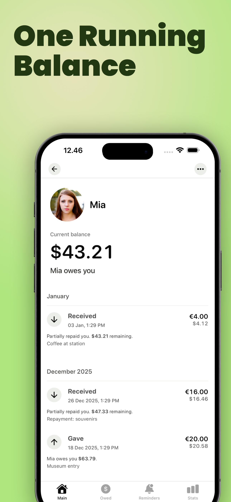
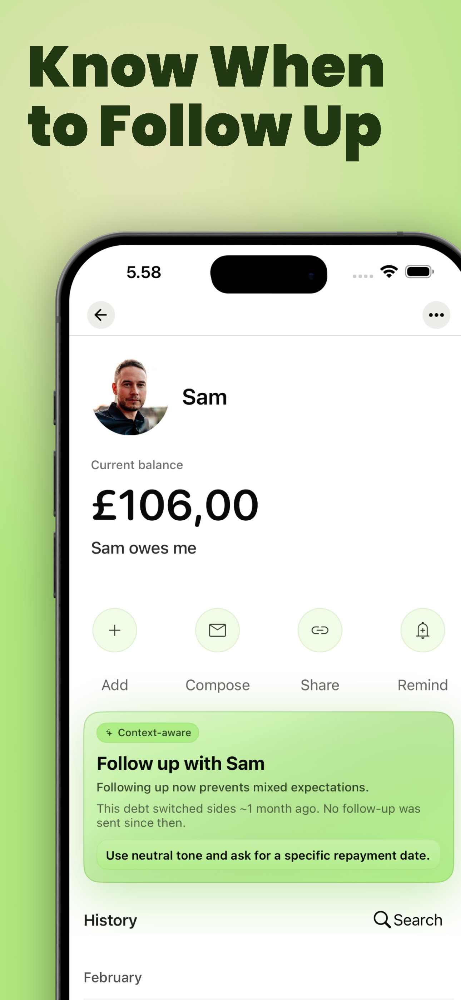
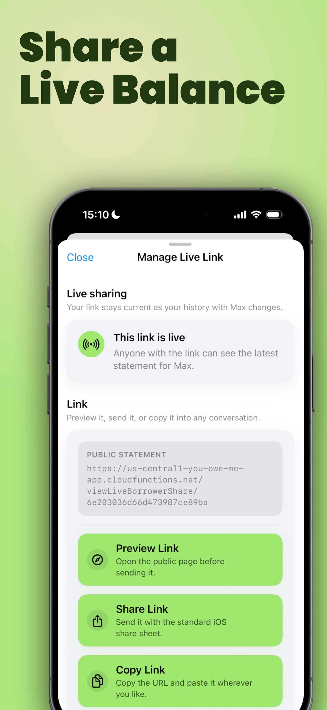
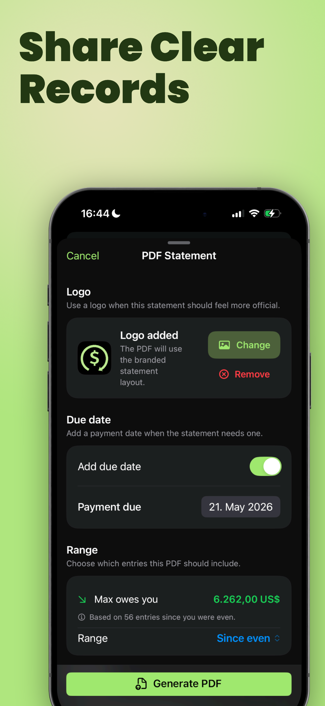

Money between people, made clear
Track IOUs, shared bills, and repayments without awkward follow-ups
YouOweMe keeps one running balance for friends, family, partners, roommates, and clients. Log what happened, track partial repayments, set reminders, share a Live Link, and generate calm money messages when money gets awkward.
- Know who owes whom without checking old messages
- Track repayments, shared bills, recurring costs, and IOUs
- Follow up with clear wording based on the real balance
Free download - Used since 2016 - Works offline - No mandatory sign-up - Face ID / Touch ID - App Store: Data Not Collected
Start with the money situation you are in
Most money problems between people are not just about math. They are about remembering the real balance, knowing when to follow up, and keeping the conversation calm.
Someone owes me money
Track IOUs, partial repayments, due dates, and calmer follow-ups when a friend, family member, or client still owes you.
Track money owedI pay for a parent or family member
Track bills, subscriptions, groceries, online purchases, and reimbursements you manage for parents, siblings, or relatives.
Track family reimbursementsWe split costs as a couple
Keep groceries, travel, rent, subscriptions, and uneven day-to-day spending clear without turning money into tension.
Track couple expensesRoommates and household bills
Track rent, utilities, groceries, household supplies, recurring charges, and roommate settle-ups in one running balance.
Track roommate expensesShared expenses over time
For friends, trips, groups, and repeated shared spending where one quick split is not enough.
Track shared expensesOne quick split
Only need to divide one bill? Use the free split expense calculator first.
Open split calculatorWhat is YouOweMe?
YouOweMe is an iPhone app for tracking money between people. It helps you record IOUs, shared bills, loans, repayments, recurring costs, reminders, Live Links, PDF statements, and follow-up messages - so you always know who owes whom and what to say next.
How YouOweMe keeps shared money clear
1
Log what happened
Add money lent, money borrowed, bills paid, shared expenses, recurring costs, or repayments.
2
See one running balance
Every entry updates the balance, so you do not have to rebuild the story from memory, notes, or old chats.
3
Follow up or share clearly
Set reminders, generate a calmer money message, send a Live Link, or create a PDF statement when the situation needs more clarity.
Real shared-money situations, not just one-time loans
Family reimbursements
Users track subscriptions, utilities, online purchases, and bills they manage for elderly parents, then reconcile every few weeks.
Couple IOUs
Users track everyday back-and-forth spending with partners - groceries, prescriptions, flights, hotels, and partial repayments.
Awkward follow-ups
Users say reminders and clear balances reduce the need for awkward "you still owe me" conversations.
Why it works
See how YouOweMe handles follow-ups, repayments, and shared expenses
The video is here for context, not as the main pitch: YouOweMe keeps the balance, the history, and the next message in one place.
- Track who owes whom clearly
- Handle follow-ups without awkward wording
- Keep shared money organized in one place

More real stories
A family user tracks parent subscriptions, utilities, online purchases, and recurring charges, then reconciles the balance every few weeks.
A couple uses YouOweMe for groceries, prescriptions, travel, hotels, and the everyday IOUs that are too easy to forget.
Users describe the app as simple, reliable, and helpful for avoiding awkward repayment reminders because the balance is already clear.
Long-time users mention clear records, reminders, recurring entries, multiple currencies, and responsive support as reasons they keep using it.
Built for the moments when money gets messy
Running balances
One running balance per person
Track money lent, borrowed, repaid, split, or covered in one timeline, so the current balance stays clear over time.

Smart Money Check-Ins
Know when to follow up
Smart Money Check-Ins look at real balances, repayment progress, reminders, promised dates, and silence to suggest when communication matters.

Money Conversations
Send the right message
Generate follow-up, ask-for-loan, and repayment-update messages from the real balance and history, with a tone that fits the relationship.

Live Link
Share a live balance
Share one always-current statement link so the other person can see the latest balance and history in a browser without installing the app.

Everything included
For simple IOUs or long-running balances, YouOweMe keeps the tools you need in one place.
- Running balances
- IOU tracking
- Shared expense splits
- Partial repayments
- Payment reminders
- Recurring entries
- Smart Money Check-Ins
- Money Conversations
- Live Link
- PDF statements
- Interest tracking
- Voice to Entry
- CSV export
- Multi-currency support
- Sync across devices and multiple cloud profiles
- Face ID / Touch ID lock
- Works offline
- No mandatory sign-up
Why clear records matter
Money between people is common, but it can become stressful quickly. Bankrate's 2025 survey found that about 70% of U.S. adults have lent money or paid a group expense expecting to be reimbursed, and 55% of them experienced at least one negative consequence.
YouOweMe helps with the part you can control: the balance, the history, the reminder, and the next message.
Source: Bankrate
Family reimbursements are common too. The 2025 Caregiving in the U.S. report says 63 million Americans provide ongoing care, and AARP reports that half of caregivers experience a negative financial impact.
Sources: Caregiving in the U.S. and AARP

FAQ
What is YouOweMe?
YouOweMe is an iPhone app for tracking money between people. It helps with IOUs, shared bills, loans, repayments, recurring costs, reminders, Live Links, PDF statements, and follow-up messages.
Is YouOweMe only for loans?
No. It can track informal loans, IOUs, shared expenses, family reimbursements, roommate bills, partner spending, client balances, recurring costs, and repayments over time.
Can it help me ask someone to pay me back politely?
Yes. Money Conversations can generate a follow-up message from the real balance and history, with a tone that fits the relationship.
Does the other person need the app?
Not always. With Live Link, one person can manage the balance in YouOweMe while the other person opens a browser link to see the latest statement and transaction history.
Can I use it for family reimbursements?
Yes. You can track purchases, bills, subscriptions, recurring charges, and repayments for parents, siblings, children, or other family members.
Can I split bills and shared expenses?
Yes. You can split expenses equally or with custom amounts, then keep the result in a running balance instead of recalculating every time.
Does it work offline?
Yes. YouOweMe can be used without mandatory sign-up and supports offline tracking.
Keep money clear before it gets awkward
Track the balance, remember the history, and know what to say next.